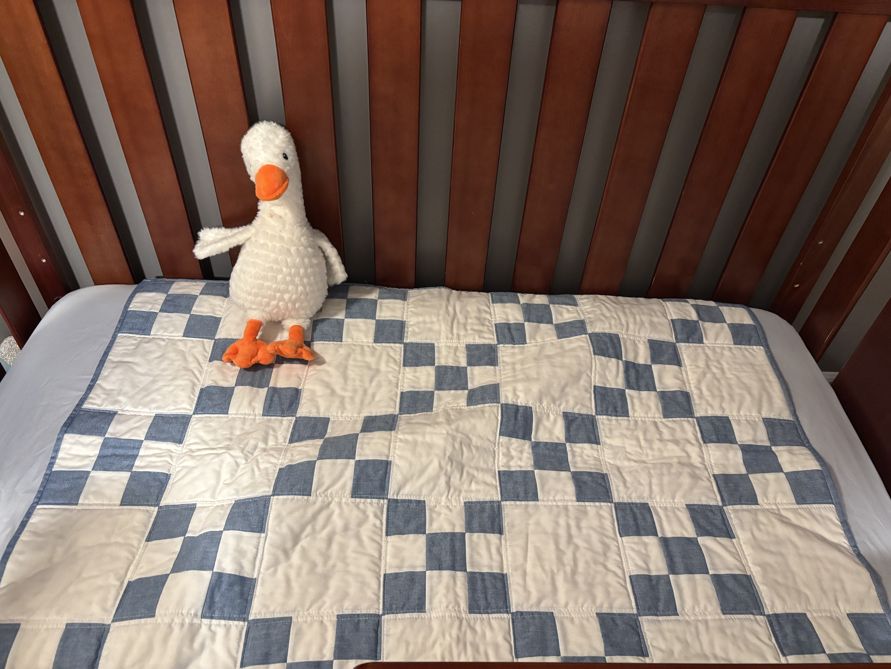
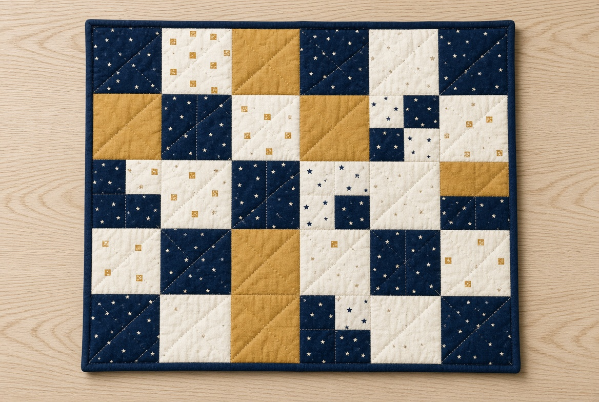

Handmade baby quilts for the people who love handmade things.
The kind of quilt Grandma would have made for the new baby. Limited quantities and colorways. $100.


Blue Check Baby Quilt
The kind of quilt Grandma would have made for the new baby. Handmade blue-and-white check front, soft sheep-print backing, ready for a crib or a shower.
$100
Limited quantities and colorways. Each one is sewn by hand.